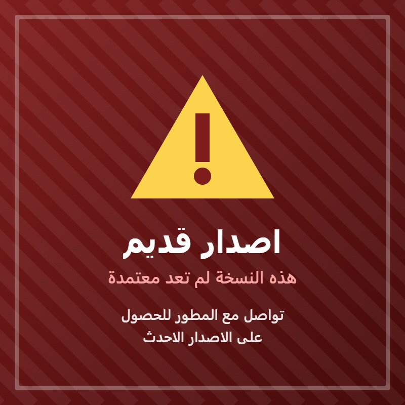

لم تسجل رقم جوالك في النظام بعد. تسجيله يساعد الادارة على التواصل معك، وهو مطلوب قبل تغيير كلمة المرور.
تثبيت التطبيق على جهازك
انت تستخدم كلمة مرور مؤقتة اصدرتها الادارة. يلزمك تغييرها الان لحماية حسابك.
لا يوجد اتصال بالانترنت
النظام يحتاج اتصالا بالانترنت ليعمل، فكل البيانات محفوظة في السحابة.
تحقق من تغطية الشبكة او الواي فاي ثم اضغط اعادة المحاولة.
لن تفقد شيئا مما ادخلته. بمجرد عودة الاتصال ستعود الى حيث كنت.

نظام ادارة الباحثين
ادارة فريق الباحث الاجتماعي بجمعية التنمية الاسرية بالاحساء
مرحبا بك في النظام الالكتروني الموحد لفريق ادارة الباحث الاجتماعي. يساهم هذا النظام في تسهيل مهام ادارة الفريق ومتابعة سير العمل بدقة واحترافية.
القائمة الرئيسية
منصة الجمعية الموحدة لتوثيق الزيارات الميدانية ومتابعة اعمال الباحثين وطلباتهم.
سجل دخولك من البوابة الخاصة بك للمتابعة.
استعادة كلمة المرور
ادخل اسمك المستخدم ورقم جوالك المسجل في النظام. بعد التحقق يصل طلبك
للمدير المختص، فيصدر لك كلمة مرور مؤقتة ويرسلها الى جوالك، ويلزمك
تغييرها فور دخولك.
يمكنك كتابته بصيغة 05xxxxxxxx وسيحول تلقائيا.
لم تسجل رقم جوالك في النظام من قبل؟
لا يمكن التحقق من هويتك اليا في هذه الحالة، فتواصل مع الدعم الفني
للباحث الاجتماعي على الرقم 0539864443 وسنجهز لك
رسالة بتفاصيل مشكلتك، ما عليك الا ارسالها.
بيانات التواصل مع الدعم الفني
اكتبه بأي من الصيغتين وسيحول تلقائيا الى الصيغة الدولية.
لا مشكلة ان تركته فارغا، سيتولى الدعم الفني البحث عن حسابك باسمك وجوالك.
شاشة الباحث: تسجيل الدخول
بوابة الباحث
توثيق زيارة
يسجل موقعك تلقائيا مع الزيارة لاثبات تواجدك في موقعها وقت تنفيذها.
تأكد من تفعيل خدمة الموقع في جهازك والسماح للموقع باستخدامها،
فلا يمكن توثيق اي زيارة بدون تحديد الموقع.
جاري الاتصال بالسحابة...
الاستعلام عن زيارة
جاري البحث...
شاشة الادارة: تسجيل الدخول
بوابة الادارة
سجل التدقيق
هذا السجل يوثق العمليات الحساسة في النظام تلقائيا، ويعرض هنا
من الاحدث الى الاقدم. هذه الشاشة مقصورة على المبرمج والمدير
العام فقط.
جاري تحميل السجل...
لا توجد سجلات في سجل التدقيق
م
العملية
التفاصيل
اسم المنفذ
الاسم المستخدم
صفة المنفذ
التاريخ والوقت
الادارة العامة والصلاحيات
بيانات المدير الجديد
رقم مقترح تلقائيا حسب التسلسل، ويمكنك تعديله.
جاري المعالجة...
تصفير بيانات النظام
حدد بالضبط ما تريد مسحه. لن يمس شيء لم تحدده،
وما يمسح لا يمكن استرجاعه اطلاقا.
اختر ما تريد تصفيره:
محمي دائما:
حسابك انت (المبرمج) — لا يحذف مهما اخترت
حتى لو حددت "حسابات المدراء" فسيمسح كل المدراء عداك، حتى لا تفقد
الوصول الى النظام نهائيا. حسابك محفوظ في قاعدة البيانات ولم يعد في الكود،
فحذفه يعني ضياع النظام بلا رجعة.
جاري تحميل المدراء...
م
اسم المدير
الاسم المستخدم
كلمة المرور
الصفة
الصلاحيات
الاجراء
الاستعلام عن زيارات
جاري جلب السجلات...
الاستعلام عن زيارة والتعديل على بياناتها
جاري البحث...
قائمة الباحثين
وضع العرض فقط: يمكنك الاطلاع والبحث والفلترة، ولا تملك صلاحية التعديل في هذه الشاشة.
تحذير: حذف نهائي لا يمكن التراجع عنه
انت على وشك حذف الباحث نهائيا من النظام،
ومعه كل سجلاته بلا استثناء. لن تتمكن من استعادة اي منها بعد التنفيذ.
السجلات التي ستحذف:
ما لن يحذف ابدا:
الزيارات الموثقة سجل عمل دائم للجمعية وليست بيانات شخصية، لذلك تبقى كما هي
ويبقى معها اسم الباحث واسمه المستخدم داخل كل زيارة، حفاظا على صحة احصاءات
الجمعية وسجلاتها التاريخية. كذلك يبقى سجل التدقيق كاملا دون مساس.
تصفية حسب حالة الباحث:
بيانات الباحث الجديد
رقم مقترح تلقائيا بصيغة OSB####، ويمكنك تعديله.
اختياري لكنه مهم: يفعل زر الواتساب ويتيح للباحث استعادة كلمة مروره بنفسه.
جاري المعالجة...
جاري تحميل الباحثين...
م
اسم الباحث
الاسم المستخدم
رقم الجوال
كلمة المرور
حالة الباحث
الاجراء
تعديل بيانات توثيق الزيارات
جاري التحميل...
فرز السجلات:
م
اسم الباحث
الاسم المستخدم
رقم الزيارة
تاريخ التنفيذ
تاريخ التوثيق
الاجراء
طلب اجازة
يجب تقديم طلب الاجازة الاعتيادية قبل تاريخها بيوم عمل واحد على الاقل، ولا تقبل التواريخ الماضية.
وللانقطاع الطارئ او الصحي استخدم زر طلب اجازة مرضية مع ارفاق العذر الطبي.
سجل طلبات الاجازات
جاري تحميل السجل...
لم تقدم اي طلب اجازة حتى الان
م
النوع
من تاريخ
الى تاريخ
عدد الايام
تاريخ الطلب
الحالة
التفاصيل / المرفق
الاجراء
طلب اجازة مرضية
الاجازة المرضية لا تخصم من رصيدك السنوي، وتقبل التواريخ الماضية للحالات الطارئة،
ولا يعتمد الطلب الا بعد مراجعة الادارة للعذر الطبي المرفق.
طلبات الاجازات
وضع العرض فقط: يمكنك الاطلاع والبحث والفلترة، ولا تملك صلاحية التعديل في هذه الشاشة.
تصفية حسب حالة الطلب:
تصفية حسب نوع الاجازة:
ترحيل الرصيد المتبقي الى السنة التالية
حساب كل سنة مستقل ولا يرحل الفائض تلقائيا. استخدم هذا القسم لترحيل ايام محددة يدويا.
جاري تحميل طلبات الاجازات...
لا توجد طلبات في هذا التصنيف
م
النوع
اسم الباحث
الاسم المستخدم
من تاريخ
الى تاريخ
عدد الايام
السنة
تاريخ الطلب
الحالة
التفاصيل / المرفق
الاجراء
سجل الاشعارات
سجل كامل لكل الرسائل الواردة. السجل محفوظ في النظام ولا يمكن حذف اي رسالة منه.
جاري تحميل السجل...
لا توجد رسائل في السجل حتى الان
زياراتي
جاري تحميل زياراتك...
لا توجد زيارات مسجلة ضمن النطاق المحدد
م
رقم الزيارة
تاريخ التنفيذ
تاريخ التوثيق
انشاء إنذار | تنبيه
وضع العرض فقط: يمكنك الاطلاع والبحث والفلترة، ولا تملك صلاحية التعديل في هذه الشاشة.
اصدار تنبيه
جاري تحميل البيانات...
رقم الزيارة اختياري عند الاصدار، ويمكن اضافته او تعديله في اي وقت لاحق
من شاشة سجل التنبيهات | الإنذارات الصادرة.
القوائم المنسدلة الجاهزة
وضع العرض فقط: يمكنك الاطلاع على القوائم، ولا تملك صلاحية التعديل عليها.
سجل هنا صيغ التنبيهات والانذارات المعتمدة في لائحة الجمعية مرة واحدة،
لتظهر جاهزة عند اصدار اي تنبيه او انذار مستقبلا.
هذا يختصر وقت المدير ويضمن ان تكون الصيغة موحدة لا تختلف من مدير لاخر.
قائمة التنبيهات المنسدلة
وضع العرض فقط: يمكنك الاطلاع على الصيغ المسجلة، ولا تملك صلاحية اضافتها او حذفها.
جاري تحميل القائمة...
القائمة فارغة، اضف الصيغ المعتمدة لتظهر جاهزة عند الاصدار
سجل التنبيهات | الإنذارات الصادرة
وضع العرض فقط: يمكنك الاطلاع والبحث والفلترة، ولا تملك صلاحية التعديل في هذه الشاشة.
تصفية حسب النوع:
يمكنك كتابة رقم الزيارة المخالفة او تعديله لاي سجل، ثم الضغط على زر الحفظ في نفس السطر.
جاري تحميل السجل...
لا توجد سجلات في هذا التصنيف
م
النوع
اسم الباحث
الاسم المستخدم
السبب
ملاحظة الادارة
رقم الزيارة
تاريخ المخالفة
تاريخ التسجيل
المصدر
الاجراء
تنبيهاتي | إنذاراتي
التنبيهات المسجلة عليك
جاري التحميل...
لا توجد تنبيهات مسجلة عليك
م
السبب
ملاحظة الادارة
رقم الزيارة
تاريخ المخالفة
تاريخ التسجيل
حسابي
الاسم:-
الاسم المستخدم:-
الصفة:-
الاسم والاسم المستخدم لا يعدلان من هنا. لتغييرهما راجع الادارة.
رقم الجوال
اكتب رقمك بأي من الصيغتين: 05xxxxxxxx او +966xxxxxxxxx،
وسيحول ويسجل تلقائيا بالصيغة الدولية.
تغيير كلمة المرور
تسجيل رقم الجوال شرط لازم قبل تغيير كلمة المرور.
وبعد التغيير تستخدم كلمة المرور الجديدة في تسجيل دخولك القادم.
إنشاء تقرير يومي
جاري تجهيز بيانات اليوم...
ارسلت تقرير هذا اليوم مسبقا. لتعديله استخدم زر الإبلاغ عن مشاكل تقنية
ثم الإبلاغ عن تقديم تقرير يومي خاطئ.
اليوم والتاريخ-
عدد الزيارات المنفذة0
عدد الزيارات المنفذة يحسب تلقائيا من الزيارات التي وثقتها بتاريخ اليوم، ولا يمكن تعديله يدويا.
معاينة التقرير
التقارير اليومية
جاري تحميل التقارير...
لا توجد تقارير مرسلة في هذا اليوم
الإبلاغ عن مشاكل تقنية
اختر نوع المشكلة التي تريد الابلاغ عنها. البلاغ يصل للمدير المختص،
وعند قبوله ينفذ التعديل تلقائيا، وعند رفضه يبقى الوضع كما هو.
متابعة البلاغات
تصفية حسب الحالة:
جاري تحميل بلاغاتك...
لا توجد بلاغات في هذا التصنيف
الإبلاغ عن تسجيل زيارة خاطئة
اختر الزيارة من القائمة، ثم حدد هل تريد تعديل بياناتها ام حذفها نهائيا، وارسل الطلب للادارة.
جاري تحميل زياراتك...
لا توجد زيارات مسجلة باسمك
ما الاجراء المطلوب على هذه الزيارة؟
طلب حذف الزيارة
عند موافقة الادارة تحذف الزيارة نهائيا من سجل الزيارات ولا يمكن استرجاعها.
لذلك كتابة السبب الزامية.
البيانات الصحيحة
الإبلاغ عن تقديم طلب اجازة بالخطأ
اختر الاجازة المعتمدة المراد الابلاغ عنها، ثم حدد الاجراء المطلوب.
جاري تحميل اجازاتك...
لا توجد لديك اجازات معتمدة
الاجراء المطلوب
التواريخ الجديدة المطلوبة
عند قبول الادارة للتعديل، اي ايام فائضة عن المدة الجديدة تعاد الى رصيد اجازاتك تلقائيا.
طلبات استعادة كلمة المرور
وضع العرض فقط: يمكنك الاطلاع على الطلبات، ولا تملك صلاحية اصدار كلمات مرور مؤقتة.
تصفية حسب الحالة:
جاري تحميل الطلبات...
لا توجد طلبات في هذا التصنيف
البلاغات
وضع العرض فقط: يمكنك الاطلاع على البلاغات وفلترتها، ولا تملك صلاحية قبولها او رفضها.